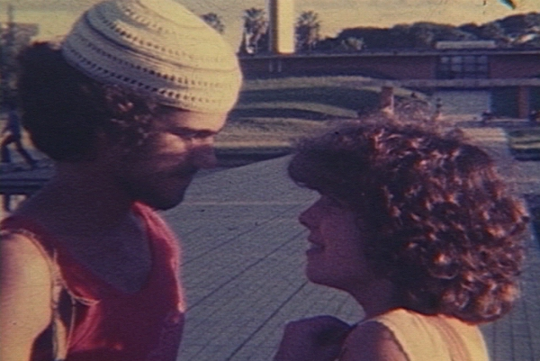

Reply to comment
DEU PRA TI ANOS 70 (No va más años 70)
|
(Super-8 mm, 108 min, color, 1981) Historias de la década de 70, contadas a partir del punto de vista de quién despertó para el mundo en ese período. A lo largo de 10 años, Marcelo y Ceres se encuentran y desencuentran en reuniones para bailar, bares, cines, universidades y acampamentos. En la noche de año nuevo de 1980, ellos aún tienen motivos para soñar, ahora juntos. |
 Foto por Nelson Nadotti: Pedro Santos y Ceres Victora |
Dirección: Nelson Nadotti y Giba Assis Brasil
Producción Ejecutiva: Nelson Nadotti e Giba Assis Brasil
Guión: Giba Assis Brasil, Nelson Nadotti y Alvaro Luiz Teixeira
Dirección de Fotografia: Nelson Nadotti
Música: Nei Lisboa y Augusto Licks
Montaje: Nelson Nadotti
Asistente de Dirección: Carlos Gerbase y Hélio Alvarez
Distribución: Casa de Cinema PoA
Elenco Principal:
Pedro Santos (Marcelo)
Ceres Victora (Ceres)
Deborah Lacerda (Margareth)
Júlio Reny (Fred)
Prêmios
- 5º Festival Nacional de Cinema Super 8, Gramado, 1981:
Mejor Película.
- Premio João de Barro de la Secretaria Municipal de Turismo, Porto Alegre, 1982.
- 7º Super Festival Nacional de Cine Súper 8 de Grife, São Paulo, 1981:
Hors Concours.
Crítica
"DEU PRA TI ANOS 70 veio para sacudir o panorama da atual cultura cinematográfica gaúcha. Mesmo se tratando de um filme realizado em Super 8, poderá ser assistido como qualquer filme numa sessão comum de cinema. Como filme, equivale a um de seus personagens, Margarete, uma garota um tanto quanto fora dos esquemas, burguesa e anarquista, cujo posicionamento pode ser contestado por uma crítica mais desapaixonada. Mas que não se pode deixar de amar quando levado pela emoção."
(Tuio Becker, FOLHA DA TARDE, Porto Alegre, 04/04/81)"Um retrato dos artistas quando bem jovens, entre o bom humor e a falta de perspectivas, entre a cultura e o sentido prático, entre o susto e a euforia, entre a alegria e a decepção."
(Goida, ZERO HORA, Porto Alegre, 13/05/81)"Quando topamos com uma fita da qualidade de DEU PRA TI ANOS 70 conseguimos realmente captar o sentido da expressão 'arte popular'. é aquela que fala do povo, das pessoas, e que sabe como fazê-lo, não precisando se valer de ingenuidades para comover, para fazer rir e para fazer pensar."
(Hélio Nascimento, JORNAL DO COMÉRCIO, Porto Alegre, 13/05/81)"Es imposible dejar de vibrar con los adolescentes que aparecen en la pantalla, con sus sueños, sus desilusiones, sus dramas - y a su cómica simplicidad (una cosa al género de, digamos, EL VERANO DE 42 o AMERICAN GRAFITTI). Más: es una película sobre Porto Alegre, sobre Rio Grande, nuestra gente, nuestros giros y expresiones. Y esto, en una ciudad y en un estado que simplemente no consiguen preservar sus valores culturales, tiene la mayor importancia."
(Moacyr Scliar, ZERO HORA, Porto Alegre, 25/05/81)"Os que descobriram o mundo na agitação mais óbvia dos anos 60 apressaram se em rotular negativamente a década passada. Mas, enquanto ela durou, outras pessoas compreenderam mistérios, modificaram se, viveram. Sem ufanismos nem modéstia excessiva, esses jovens gaúchos estão contando o que sucedeu a eles com saudáveis doses de humor, de crítica e de sensibilidade cinematográfica."
(Edmar Pereira, JORNAL DA TARDE, São Paulo, 27/06/81)"Os diretores souberam misturar na medida certa o regionalismo (o sotaque gaúcho dá ao filme um charme particular) e influências externas (homenagens a Fellini e Lelouch, especialmente o seu 'Toda uma vida'). Se for bem analisada, a estrutura do filme é extremamente complexa, dispensando os flash backs tradicionais para apresentar situações fragmentadas em épocas diferentes, usando como fio condutor um casal (Ceres e Marcelo) desde quando são meros conhecidos até descobrirem que se amam."
(Rubens Ewald Filho, O ESTADO DE SÃO PAULO, 27/06/81)"Lo que conmueve al espectador - el joven y el adulto - NO VA MÁS AÑOS 70 es el hecho de que no se pretende dar la palabra final a respecto de nada. El joven equipo supo hacer lo que es fundamental en arte: tener sinceridad, buscar la expresión de sí propio, permitir que el espectador (el interlocutor de la obra) se posicione libremente sobre lo que ve. (...) No es siempre que la juventud brasileña reencuentra su propia voz para expresarse."
(Antônio Hohlfeldt, CORREIO DO POVO, Porto Alegre, 14/01/82)"Talvez seja um fato único na história do cinema mundial. Um filme em super-8 - bitola mais comum em casamentos e batizados do que em grandes obras cinematográficas - representou, para toda uma geração de cineastas gaúchos surgida nos anos 80, o que 'Roma, cidade aberta' foi para os neo-realistas, 'Acossado' para a Nouvelle Vague, 'Rio 40 graus' para o Cinema Novo. Com o explícito título DEU PRA TI ANOS 70 e uma história que flagrava com muita criatividade e olho jornalístico o cotidiano da juventude de Porto Alegre na virada dos 70 para os 80."
(Hugo Sukman, O GLOBO, Rio de Janeiro, 30/05/1999)"Pra quem é da época, é um mergulho no tempo. Crises de adolescência e juventude, manhas de linguagem (foi este o filme que deu o Grito de Independência do porto-alegrês como língua digna de ser pronunciada na arte), dilemas da época (a famosa e decisiva passeata de 23 de agosto de 1977 está lá, numa seqüência criativamente filmada com fotografias)."
(Luis Augusto Fischer, ABC DOMINGO, 16/12/2001)"DEU PRA TI ANOS 70 constitui experiência singular na história do cinema brasileiro. É um dos melhores momentos de nossa Producción juvenil. (...) Em torno de Marcelo e Ceres, amigos que se amam em silêncio, gravitam jovens que torcem pelo Inter (o filme abre-se em festa comemorativa do tricampeonato colorado - 1969/71), falam de sexo, freqüentam festinhas (cheias de bocomocos, gíria da época) e praias pouco ensolaradas para nossos padrões, preparam-se para o vestibular. (...) Ver o filme, com sua narrativa fragmentada, emotiva e sincera, é reencontrar atores e técnicos que povoaram os créditos dos filmes gaúchos nos anos 80 e 90."
(Maria do Rosário Caetano, O ESTADO DE SÃO PAULO, 27/01/2002)
http://www.estado.estadao.com.br/editorias/2002/01/27/cad027.html"Além de mostrar o caminho dos jovens em busca de um lugar, o filme também aborda o conflito de gerações. (...) Trata os pais quase sempre com ironia, ressaltando que a caretice não impede que a juventude faça o que quiser: a mãe de Sônia manda baixar o volume do som na festa, mas logo depois a música fica alta; a mãe de Ceres quer levá-la na rodoviária, mas ela não deixa, principalmente porque esconde que vai de carona. (...) A relação falha entre pais e filhos pode espelhar de certa forma a ruptura entre os 'jovens cineastas da bitola nanica' e o passado cinematográfico gaúcho, mais precisamente o cinema predominante no início da década de 70, basicamente Teixeirinha."
(Fabiano de Souza, revista TEOREMA nº 1, Porto Alegre, agosto/2002)"O que há de especial em DEU PRA TI ANOS 70? Talvez seja esse momento inexplicável em que caímos no truque do mágico, em que a suspensão da descrença se dá de forma mais aguda, esse ponto em que acreditamos na verdade da mentira e nos parece que a ficção encontrou a realidade – ou melhor, faz parte dela integralmente. (...) Mais do que a história do amor de Ceres e Marcelo ao longo de dez anos, DEU PRA TI pretende olhar para toda a década que os personagens viveram. Dessa forma, o filme nos transmite a sensação de ser parte integrante do momento que retrata e consegue manter deste momento uma atmosfera e um calor únicos."
(Daniel Caetano, revista virtual CONTRACAMPO, janeiro/2003)
24/03/1981